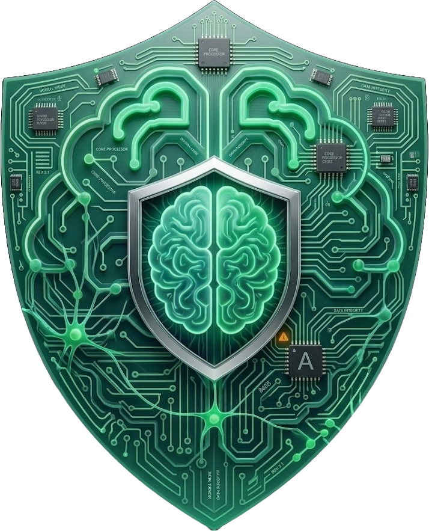

AIDS SOC
v4.2
|
SOC OVERVIEW
▶ CLICK TO ENTER
AI PIPELINE
▶ CLICK TO ENTER
AI COPILOT
▶ CLICK TO ENTER

The Security Operations Center Overview is the platform's main command screen.
The AI Pipeline is the background process responsible for producing the very models the detection engine relies on.
The AI Copilot is a standalone assistant giving the analyst a natural-language way to ask questions.